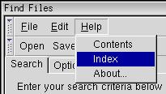
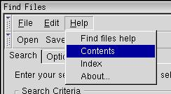

Overlays
This section will describe overlays which can be used to separate common content.
Using Overlays
In a simple application with only one window, you will generally have only one XUL file, along with a script file, a style sheet, a DTD file and perhaps some images. Some applications will have a number of dialogs associated with them also. These will be stored in separate XUL files. More sophisticated applications will contain many windows and dialogs.
An application that has several windows will have numerous elements or parts of the user interface that are common between each window. For example, each of Mozilla's components share some common elements. Some of the menus are similar, such as the Tools and Help menus, the sidebar is similar, and each window shares some common global keyboard shortcuts.
One could handle this by re-implementing the similar elements and functions in each file that are needed. However, this would be difficult to maintain. If you decide to change something, you would have to change it in numerous places. Instead, it would be better to use a mechanism that allows you to separate the common elements and have them shared between windows. You can do this with overlays.
Within an overlay, you may place elements that are shared between all windows that use that overlay. Those elements are added into the window at locations determined by their ids.
For example, let's say you want to create a help menu that is shared between several windows. The help menu will be placed in an overlay, using the same XUL that you would use normally. The menu will be given an id attribute to identify it. Each window will import the overlay using a directive which will be described in a moment. To use the help menu as defined in the overlay, you only need to add a single menu element with the same value for its id attribute as used in the overlay. This menu does not need to contain any children as those will be placed in the overlay.
When a window with an overlay is opened, the elements in both the window and the overlay with the same ids are combined together. The children of matching elements are added to the end of the set of children in the window's element. Attributes that are present on the overlay's elements will be applied to the window's elements. These details will be explained in more detail later.
To import an overlay into a window, use the syntax described below. Let's add this near the top of the findfiles dialog XUL file.
<?xul-overlay href="chrome://findfile/content/helpoverlay.xul"?>This line should be added somewhere near the top of the file, usually just before any DTDs are declared. In the example above, the window is importing an overlay stored in the file helpoverlay.xul.
The overlay itself is a XUL file that contains an overlay element instead of a window element. Other than that, it is much the same. You can import overlays from inside other overlays. Overlays can also have their own stylesheets, DTDs and scripts. The example below shows a simple Help menu stored in an overlay.
Example 12.6.1: Source<?xml version="1.0"?>
<!DOCTYPE overlay SYSTEM "chrome://findfile/locale/findfile.dtd">
<overlay id="toverlay"
xmlns="http://www.mozilla.org/keymaster/gatekeeper/there.is.only.xul">
<menu id="help-menu">
<menupopup id="help-popup">
<menuitem id="help-contents" label="&contentsCmd.label;"
accesskey="&contentsCmd.accesskey;"/>
<menuitem id="help-index" label="&indexCmd.label;"
accesskey="&indexCmd.accesskey;"/>
<menuitem id="help-about" label="&aboutCmd.label;"
accesskey="&aboutCmd.accesskey;"/>
</menupopup>
</menu>
</overlay>The overlay element surrounds the overlay content. It uses the same namespace as XUL window files. Defined within the overlay is a single menu with three items in it. The id of this menu is help-menu. This means that its content will be added to the window where a similar element exists with the same id value. If such an element does not exist, that part of the overlay is ignored. The overlay can contain as many elements as necessary. Note that the overlay needs to include the DTD file also. We use the same one as the main window here, but normally you would create a separate DTD file for each overlay.
Next, we need to add the help menu to the findfiles dialog window. To do this just add a menu with the same id in the right location. The most likely place is just after the edit menu.
<menu id="edit-menu" label="Edit" accesskey="e">
<menupopup id="edit-popup">
<menuitem label="&cutCmd.label;" accesskey="&cutCmd.accesskey;"
key="cut_cmd"/>
<menuitem label="©Cmd.label;" accesskey="©Cmd.accesskey;"
key="copy_cmd"/>
<menuitem label="&pasteCmd.label;" accesskey="&pasteCmd.accesskey;"
key="paste_cmd" disabled="true"/>
</menupopup>
</menu>
<menu id="help-menu" label="&helpCmd.label;"
accesskey="&helpCmd.accesskey;"/>
</menubar>Here, the help menu element contains no content. The items from the menu are taken from the overlay because the ids match. We can then import the overlay in other windows and only have the contents of the help menu defined in one place. We need to add some lines to the DTD file as well:
<!ENTITY helpCmd.label "Help"> <!ENTITY helpCmd.accesskey "h"> <!ENTITY contentsCmd.label "Contents"> <!ENTITY indexCmd.label "Index"> <!ENTITY aboutCmd.label "About..."> <!ENTITY contentsCmd.accesskey "c"> <!ENTITY indexCmd.accesskey "i"> <!ENTITY aboutCmd.accesskey "a"> <!ENTITY findfilehelpCmd.label "Find files help"> <!ENTITY findfilehelpCmd.accesskey "f">
We will use the last two entities in a moment.

We can further reduce the amount of code within the window by putting the attributes on the help menu (label and accesskey in this example) in the overlay instead. Those attributes will be inherited by the element. If both the element and the window specify the same attribute, the value in the overlay will override the element's value.
Let's change the help menu in this manner.
findfile.xul: <menu id="help-menu"/> helpoverlay.xul: <menu id="help-menu" label="&helpCmd.label;" accesskey="&helpCmd.accesskey;">
If there is content inside both the XUL window and in the overlay, the window's content will be used as is and the overlay's content will be appended to the end. This following example demonstrates this:
stopandgo.xul:
<?xml version="1.0"?>
<?xml-stylesheet href="chrome://global/skin/global.css" type="text/css"?>
<window title="Stop and Go" id="test-window"
xmlns="http://www.mozilla.org/keymaster/gatekeeper/there.is.only.xul">
<?xul-overlay href="chrome://findfile/content/toverlay.xul"?>
<box id="singlebox">
<button id="gobutton" label="Go"/>
<button id="stopbutton" label="Stop"/>
</box>
</window>
toverlay.xul:
<?xml version="1.0"?>
<overlay id="toverlay"
xmlns="http://www.mozilla.org/keymaster/gatekeeper/there.is.only.xul">
<box id="singlebox">
<button id="backbutton" label="Back"/>
<button id="forwardbutton" label="Forward"/>
</box>
</overlay>
In this example, the box with the identifier singlebox contains its own content. The elements are combined and the two buttons from the overlay are added to the end of the box.
We can use this technique in the find files dialog also:
findfile.xul:
<menu id="help-menu">
<menupopup id="help-popup">
<menuitem id="help-findfiles" label="&findfilehelpCmd.label;" accesskey="&findfilehelpCmd.accesskey;"/>
</menupopup>
</menu>
</menubar>The id attribute of the menupopup element also matches the one in the overlay. This will cause the items to be merged into the same popup. Overlays will merge items with the same ids even if they are inside of other elements.

Placing Overlaid Elements
However, we may have wanted to have the menu items from the overlay in the previous example placed at the beginning of the menu instead of at the end. XUL provides a mechanism that allows you to not only place them at the beginning but to put some of the items at the top and others at the bottom (or anywhere in-between). This allows you to overlay menus, toolbars and other widgets at the exact location that you wish.
To do this, use the insertbefore attribute on the menuitems. Its value should be the id of an element that you want to insert the item before. Alternatively, you can use the insertafter attribute to indicate which element to insert after. These attributes only affect the element the attributes are added to. If one element is 'inserted before', the remaining elements are still added to the end. If you want to have all the elements appear before, you must put the insertbefore attribute on all elements.
In addition, you can use the position attribute if you want to specify a specific index position. The first position is 1.
Let's say that we wanted the Contents and Index items from the previous example to appear before the Find files help item and the About item to appear after. To do this we add the insertbefore attribute to both the Contents and Index menu items. For completeness, you could add an insertafter attribute on the About menu too, but it isn't necessary because it appears at the end by default.
In the help menu example above, the id of the menu item is help-findfiles. Thus, we need to set the insertbefore attributes to this id. The example below shows the changes:
<menupopup id="help-popup"> <menuitem id="help-contents" label="Contents" insertbefore="help-findfiles"/> <menuitem id="help-index" label="Index" insertbefore="help-findfiles"/> <menuitem id="help-about" label="About..."/> </menupopup>
Now, when a window using the help overlay (such as the find files dialog) is opened, the following will occur:
- For all of the items directly in the overlay, that is all the children of the overlay element, an element in the base window is found with the same id. If not found, that element in the overlay is ignored. In this example, the elements with the ids of help-menu and help-popup are found.
- If found, the attributes on the overlay's element are copied to the found element.
- The children of the overlay's element, in this case each menuitem, are
inserted as children of the base window's element.
- If the overlay's element contains an insertafter attribute, the element is added just after the element in the base window with the id that matches the value of this attribute.
- If the overlay's element contains an insertbefore attribute, the element is added just before the element in the base window with the id that matches the value of this attribute.
- If the overlay's element contains an position attribute, the element is added at the one-based index specified in this attribute.
- Otherwise, the element is added as the last child.
Actually, the values of insertbefore and insertafter can be comma-separated lists, in which case the first id in the list that is found in the window is used to determine the position.
(Next) Next, we'll find out to apply overlays to windows in different packages.
Examples: 12.6.1
Find files example so far: Source